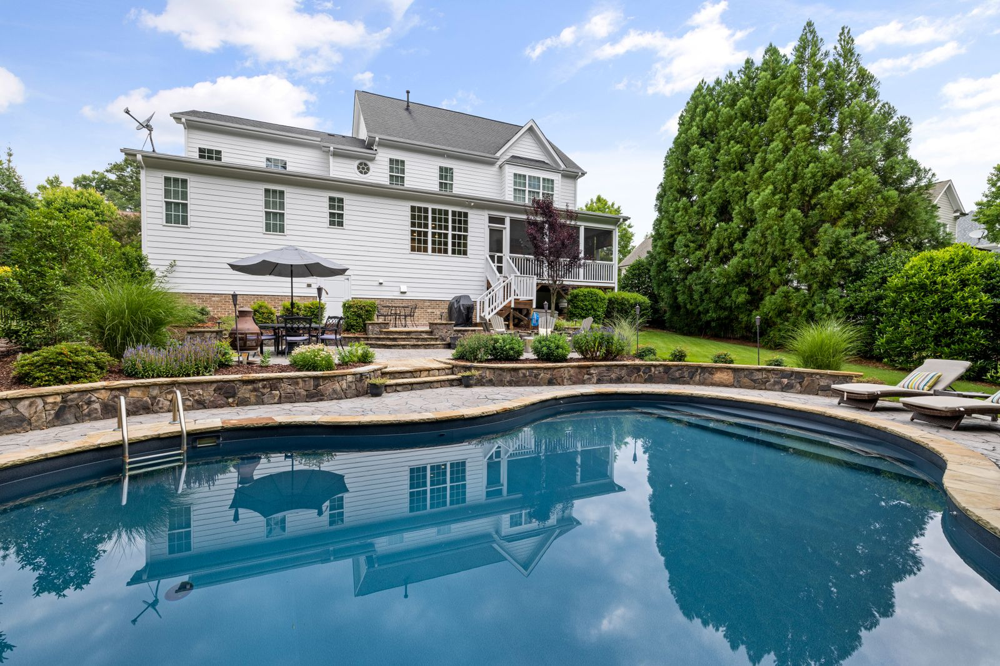

Our Work
The proof is
in the water.
Drag the handle. Every one of these started as a backyard someone had given up on — real pools, real Hill Country addresses, real turnarounds.

BEFORE
AFTER
Cedar Park Green-to-Glass
Rescue Nº 1,847 · reclaimed in 4 days · no drain
Nineteen hundred rescues across the Hill Country — average green-to-clean, four days.
Backyards we brought back.
Hover, tap, or tab through a rescue to open its story.
What the neighbors say.
4.9 average across 600+ verified reviews.
“They pulled our pool back from full swamp in four days — and it's stayed glass ever since.”
“Weekly visits, one point of contact, chemistry logged every time. We stopped thinking about the pool at all.”
“Mustard algae had beaten three other companies. Meridian triple-shocked it and it never came back.”
“I got my Saturdays back. That's the whole review.”
“They caught a failing pump motor a month before it would have quit on us in July. That call paid for the year.”
“Bought a house with a pool that had sat empty all winter. They reclaimed it without draining a drop.”
Your pool could be next.
Send us a photo of the water today. We will tell you exactly what it takes to bring it back.
Start my rescue →
© 2026 Meridian Pool Care · Lic. #TX-PC-2201 · Bonded & insured
(512) 555-0143care@meridianpools.comAustin & Hill Country